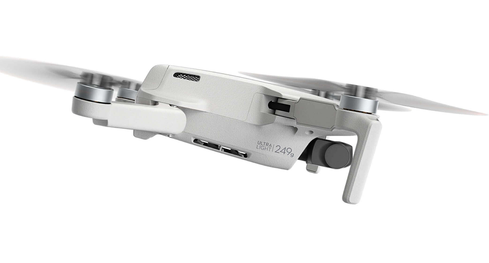

Menos de 249 g[1]
Fácil de usar
Transmissão de vídeo até 10 km
Tempo máximo de voo de 31 minutos
Modos inteligentes
Resistência ao vento até 38 km/h (nível 5)
Uma perspectiva fora do comum
Registrar os momentos do dia a dia e suas viagens é sempre uma boa ideia. Com o DJI Mini 4K, você traz à tona perspectivas únicas que fazem seus momentos voarem.
Leve e portátil
Pesando menos de 249 g, o DJI Mini 4K tem praticamente o mesmo peso de uma maçã. Compacto e prático, ele cabe na sua mão e é o companheiro ideal de viagens. Transforme a maneira de capturar os seus momentos favoritos.
Transmissão de vídeo em HD até 10 km
Com até 10 km de alcance de transmissão de vídeos em HD, o DJI Mini 4K permite você voar mais longe e ver além.

Tempo máximo de voo de 31 minutos
Com bateria com duração máxima de 31 minutos, o DJI Mini 4K entrega tempo de voo suficiente para fazer a captura perfeita.
Poderosa capacidade de voo
O DJI Mini 4K voa com estabilidade, mantendo suas gravações em segurança até mesmo ao voar em ambientes com ventos de nível 5 até 38 km/h.
Altitude máx. de decolagem
4.000 m
Altitude máx. de decolagem
38 km/h (nível 5)
Nunca foi tão fácil ser criativo
Domine a arte do voo desde o começo. Recursos inteligentes ajudam você a criar imagens impressionantes e profissionais.
Intuitivo para iniciantes
No aplicativo DJI Fly, você encontra instruções intuitivas e diversos tutoriais de voo de fácil entendimento. Acesse dicas e informações necessárias para começar a voar em segurança.
Decolagem e pouso com apenas um toque
Basta pressionar e segurar o botão de decolagem/pouso para que seu drone decole e pouse automaticamente.
Voo estacionário estável
Combinando GNSS e sistemas de detecção visual inferior e infravermelho, o DJI Mini 4K consegue se manter parado no ar com estabilidade.
Retorno à Base (RTH)
As funções de RTH inteligente, RTH de bateria fraca e RTH à prova de falhas trazem a confiança adicional necessária para voar com tranquilidade.
Amplie sua criatividade com os modos inteligentes
Fazer a gravação dos seus sonhos é muito mais fácil do que você imagina.
QuickShots
Com poucos toques, o DJI Mini 4K consegue capturar vídeos em nível profissional para você compartilhar nas redes sociais. Não importa se é um piloto experiente ou novato, com o aplicativo DJI Fly, você tem a ajuda que precisa para criar obras cinematográficas com trilha sonora e filtros.
Panorâmica
Escolha entre as opções Panorâmicas Esféricas, Ampla e 180º e deixe que o DJI Mini 4K cuide do resto. Crie obras de arte panorâmicas com mais facilidade e apenas um toque.
Poderosa câmera com estabilizador
Reviva seus melhores momentos com gravações em alta qualidade
Estabilizador triaxial
Graças ao sistema com estabilização triaxial mecânica, o DJI Mini 4K permite gravações nítidas em qualquer que seja a intensidade das suas aventuras.
Imagens nítidas e estáveis
A câmera equipada com sensor CMOS de 1/2.3” captura fotos em 12MP e grava vídeos em 4K. Eternize momentos em família e entre amigos capturando a paisagem completa de suas viagens. O DJI Mini 4K é capaz de transformar qualquer momento em cenas criativas.
Zoom de 4×
O zoom de 4x permite alternar entre gravações em diferentes distâncias e composições ao gravar vídeos em HD. Isso significa que é possível fazer gravações nítidas e vibrantes de crianças, animais de estimação ou de pontos turísticos de uma distância segura.
DJI Brasil agora tem seu canal oficial para a compra dos seus produtos.
Este é o canal oficial da DJI no Brasil.
Comprando aqui, no site oficial, você tem a segurança de receber um produto original, regulamentado, certificado pelas agências nacionais competentes e ainda fica 100% protegido pela nossa garantia e assistência.
ATENÇÃO: não nos responsabilizamos por produtos adquiridos em outros canais que não os oficiais.